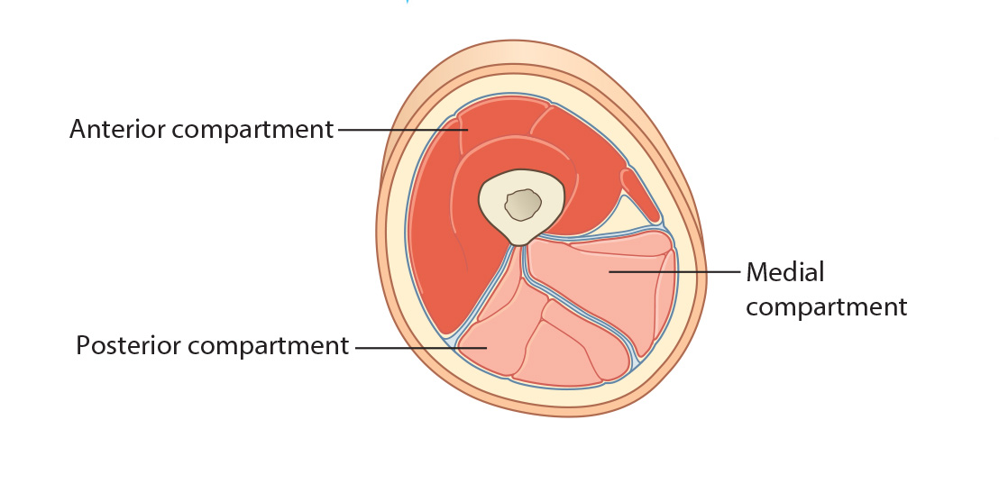

Lab 5 - Module 2 - Hip and Anterior Thigh - Muscles, Nerves and Vessels: Page 5 of 8
Deep Fascia Thigh
|  |
| Tap on image to enlarge |
| The Deep Fascia of the Thigh (Fascia Lata) – strong fascia that covers the thigh. It separates the thigh into three separate compartments: Anterior, Medial, and Posterior through intermuscular septa that attach to the posterior femur. The lateral intermuscular septum is strongest. The overlying iliotibial tract is continuous with the lateral intermuscular septum. The lateral fascia lata is thickened to form the ilitotibial tract which serves as the aponeurosis for the tensor fascia lata and gluteus maximus muscles. |
| Add the Tensor Fasciae Lata. |
|
Origin - Arises from the anterior part of the outer lip of the iliac crest, the lateral aspect of the anterior superior iliac spine and the upper part of the anterior border of the iliac wing. Insertion - It descends between, and is attached to the two layers of the iliotibial tract, terminating onto the lateral condyle of the tibia (Gerdy’s Tubercle). Innervation - Superior gluteal nerve. Action - Tensor fasciae latae acts through the iliotibial tract by pulling it superiorly and anteriorly. It assists in the flexion, abduction and medial rotation of the hip joint and extension of the knee joint. Through these actions, tensor fasciae lata aids in the stabilization of the pelvis on the head of the femur and of the condyles of the femur on the tibial condyles. |
Clinical Pathology Correlation: Iliotibial Band SyndromeIliotibial band syndrome typically occurs when repetitive knee flexion is necessary, such as in runners or cyclists. Some patients have pain predominantly in the knee but others feel that the hip is dislocating, popping or snapping even during normal ambulation. Localized tenderness over the greater trochanter is the most useful sign. There may also be a feeling of a band rolling over the greater trochanter. The most important differential diagnosis is from lumbar pain. A contracture of the iliotibial band is detected by ‘Ober’s test’ with the patient lying on the unaffected side, the affected extremity is passively abducted with the thigh in extension and the knee flexed at 90 degrees. When the abducted leg is released the thigh remains abducted. The opposite side serves as a control. |